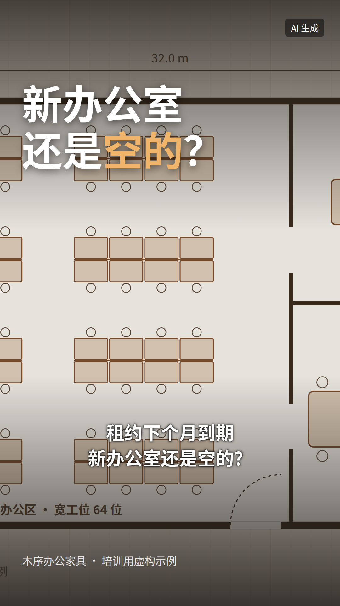
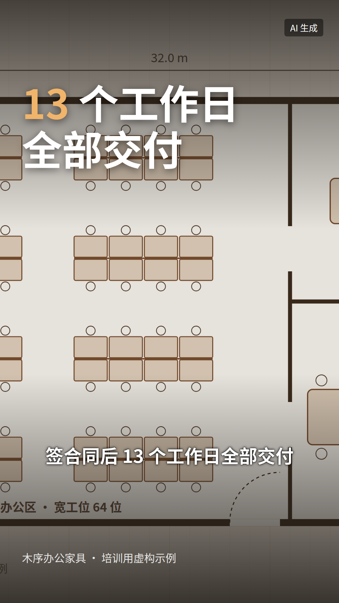

作业三教程｜做一条业务口播视频
 Grokbot
Grokbot Codex课件 第 34 页
Codex课件 第 34 页60 秒口播视频，先写稿，再生成，最后剪。稿子决定了八成效果，所以前 25 分钟全花在稿子上。示例的稿子、字幕、分镜、发布文案在 跟做样例_木序办公家具/产出/。
示例只做到成片之前
数字人平台和剪映要在你自己的电脑上操作，示例文件夹里没有成片视频。稿子、字幕、分镜、封面都是完整的，照着做就能出片。
A选钩子，写 60 秒口播稿（25 分钟）
让「业务顾问」给 3 个开头
#! 发给 Grokbot「业务顾问」（换成你的客户和行动）
我要做一条 60 秒口播视频，讲给「深圳、东莞、广州要搬新办公室的公司行政或老板」听，最后让他们「约一次免费上门量尺」。
请给我 3 个开头钩子，每个 20 字以内，分别用这三种写法：
1. 反常识：说一个客户以为对、其实不对的事
2. 具体数字：用一个我业务里的真实数字开头（从业务卡片里找，没有就标「待确认」）
3. 点名处境：直接说出客户此刻遇到的情况
Grokbot「业务顾问」
- 反常识：选办公家具，最该比的不是单价。
- 具体数字：80 人的公司，13 个工作日从空办公室到入驻。
- 点名处境：租约下个月到期，新办公室还是空的？
选一个。示例选了第 3 个：目标客户一听就知道「说的是我」。
让 Codex 写稿
#! 发给 Codex
用 talk-script 这个 Skill 写口播稿，钩子用「租约下个月到期，新办公室还是空的？」，行动指向「约一次免费上门量尺」（网址作业四上线后补）。
它先给稿子，标出每段秒数和字数：
Codex：口播稿
| 段 | 稿子 | 秒 | 字 |
|---|---|---|---|
| 钩子 | 租约下个月到期，新办公室还是空的？ | 0–3 | 15 |
| 冲突 | 大多数老板这时候才开始找家具厂，一问交期，一个月起步。旧办公室要退租，新办公室坐不了人，几十号人只能挤在会议室里办公。 | 3–15 | 53 |
| 证据 | 今年 5 月，深圳宝安一家 80 人的跨境电商就遇到了这个情况，离搬家只剩 3 周。我们第 2 天上门量尺，第 4 天出 3D 方案，工厂排产 10 天，再用周末两天进场装完。80 个宽工位、3 间会议室、4 组文件柜，签合同后 13 个工作日全部交付，比他们要求的时间提前了整整一周。 | 15–40 | 112 |
| 转折 | 所以选办公家具，先别急着比单价，先问清楚三件事：多久能出方案，多久能装完，晚了谁负责。 | 40–52 | 37 |
| 行动 | 想知道你的办公室多久能装好，点主页链接，约一次免费上门量尺。 | 52–60 | 27 |
| 合计 | 60 | 244 |
证据段出处：知识库/04_案例/案例_深圳跨境电商80人_202605.docx
大声读一遍，计时
打开手机秒表，用平时说话的速度读。55–65 秒为准：
- 超过 65 秒：删冲突段，证据段的数字别删
- 不到 55 秒：证据段补一个细节（示例可以补「加装了双屏支架」）
检查
- 读出来 55–65 秒
- 钩子里没有「大家好，我是」
- 证据段每个数字都能在知识库找到
- 结尾只有一个动作
- 没有「最」「第一」「100%」
B设置形象和声音（15 分钟）
三选一：
| 版本 | 做法 | 要准备什么 |
|---|---|---|
| 基础版 | 数字人平台里选一个平台授权的公共形象，用合成配音 | 只要账号 |
| 进阶版 | 用开课前 2 天上传的本人形象和声音 | 签好的 肖像与声音授权书.md |
| 兜底 | 不用数字人：产品图、门店照片或屏幕录制 + 合成配音 + 字幕 | 几张自己拍的图 |
用哪个数字人平台、额度怎么分，讲师现场通知。平台里通常要设这几项：
| 设置 | 选什么 |
|---|---|
| 画面比例 | 竖版 9:16（发短视频）；放网站再导一版横版 16:9 |
| 形象 | 公共形象选穿着和你行业接近的；别用明星脸 |
| 音色 | 和形象性别、年龄一致；先试听钩子那一句 |
| 语速 | 每分钟 240–270 字（244 字的稿子大约 1 分钟） |
红线
用别人的脸和声音必须有本人书面授权。明星、网红、客户的形象一律不用。
C生成、配字幕、剪节奏（35 分钟）
生成
把口播稿按段贴进平台（钩子、冲突、证据、转折、行动之间空一行，平台会在段落间停顿），生成后下载 mp4。
导入剪映，加字幕
- 剪映专业版 → 开始创作 → 导入刚才的 mp4，拖到时间线
- 字幕两种做法，选一种：
- 用 Codex 生成的 SRT：文本 → 本地字幕 → 导入
产出/日期_字幕_v1.srt - 文本 → 智能字幕 → 识别字幕，识别完对照稿子逐条改错字
- 用 Codex 生成的 SRT：文本 → 本地字幕 → 导入
- 字幕样式：白字黑描边，放在画面下三分之一，别挡住脸
不同版本菜单名称略有不同，找「字幕」或「文本」入口。
Codex 生成的字幕（前 3 条）
1
00:00:00,000 --> 00:00:02,800
租约下个月到期
新办公室还是空的？
2
00:00:03,000 --> 00:00:06,000
大多数老板这时候才开始找家具厂
3
00:00:06,100 --> 00:00:08,600
一问交期，一个月起步
完整 17 条：产出/20261028_字幕_v1.srt
按分镜插真实画面
只有数字人一张脸，60 秒会很闷。「证据」段一定要切到真实画面：
| 段 | 秒 | 画面 |
|---|---|---|
| 钩子 | 0–3 | 数字人近景，头顶大字「新办公室还是空的？」 |
| 冲突 | 3–15 | 数字人；第 8 秒切空办公室画面 2 秒 |
| 证据 | 15–40 | 平面方案图慢慢推近 → 工厂 / 安装现场 → 大字「13 个工作日」 |
| 转折 | 40–52 | 数字人；三件事逐条弹出 |
| 行动 | 52–60 | 数字人 + 底部「预约免费上门量尺」 |
完整分镜：产出/20261028_分镜_v1.md


剪节奏
- 删掉开头的空白、段落之间超过半秒的停顿
- 前 3 秒不放 Logo、不放片头，直接是钩子
- 导出 1080p。竖版 1080×1920 发短视频，横版 1920×1080 放网站
检查
- 静音看前 3 秒，只看字幕能不能让人停下来
- 字幕没有错字，数字和稿子一致
- 「证据」段有真实画面
- 画面里没有客户名称、Logo、人脸
D发布文案（15 分钟）
talk-script 已经顺带写了发布文案，对照 作业三-口播视频/发布文案模板.md 检查一遍：
Codex：发布文案
标题（选 1）：80 人的公司，13 个工作日从空办公室到入驻 封面大字：新办公室还是空的？ 正文：旧办公室要退租，新办公室家具还没到？深圳一家 80 人的公司只剩 3 周，我们签合同后 13 个工作日装完。选办公家具前，先问清楚出方案、装完、延误三件事。约免费上门量尺，点主页链接。 标签：#办公家具 #办公室装修 #公司搬家 #新办公室 #深圳
完整版（含各平台怎么改）：产出/20261028_发布文案_v1.md
发布时，在平台发布页找到「作者声明」或「内容由 AI 生成」，勾上。用了数字人、合成配音、AI 画面的都要勾，这是《人工智能生成合成内容标识办法》（2025 年 9 月 1 日起施行）的要求。
交付对照
| 交付 | 你的文件 | 示例 |
|---|---|---|
| 视频 | 产出/日期_口播_v1.mp4 |
示例没有成片 |
| 口播稿 | 产出/日期_口播稿_v1.md |
20261028_口播稿_v1.md |
| 字幕 | 产出/日期_字幕_v1.srt |
20261028_字幕_v1.srt |
| 发布文案 | 产出/日期_发布文案_v1.md |
20261028_发布文案_v1.md |
卡住了
| 现象 | 怎么办 |
|---|---|
| 稿子太长，读了 75 秒 | 让 Codex「压到 250 字以内，证据段的数字一个都不删」 |
| 数字人念错数字、念错英文 | 平台里把「3D」写成「三 D」、「MX-W140」写成「宽工位」；字幕里保留原写法 |
| 数字人平台额度用完 | 走兜底：几张照片 + 合成配音 + 字幕，剪映里一样能合成 |
| 字幕和声音对不上 | 用「识别字幕」重新生成时间轴，再对照稿子改字 |
| 视频太大放不进网站 | 导出时码率选「推荐」；60 秒控制在 20MB 以内，或传到视频号用嵌入代码 |